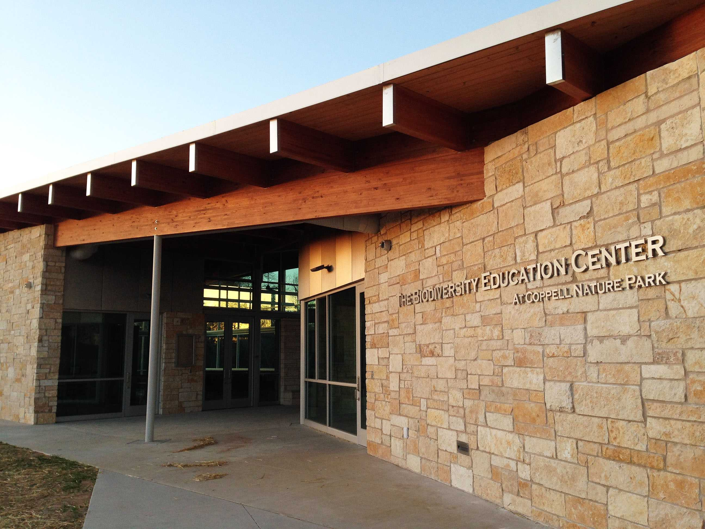
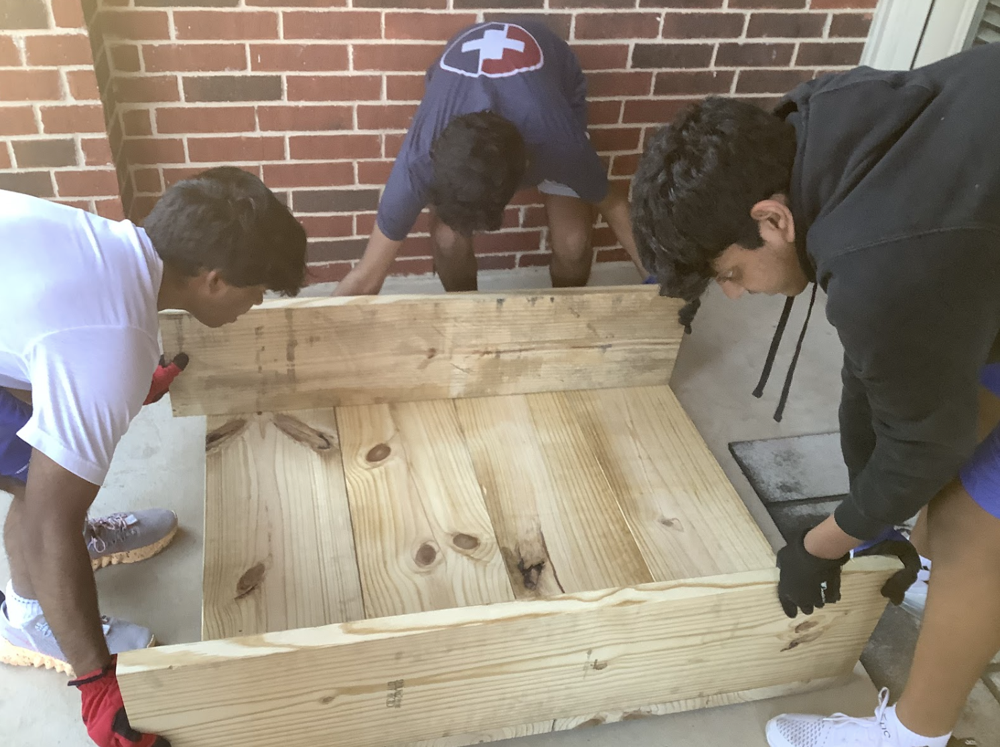
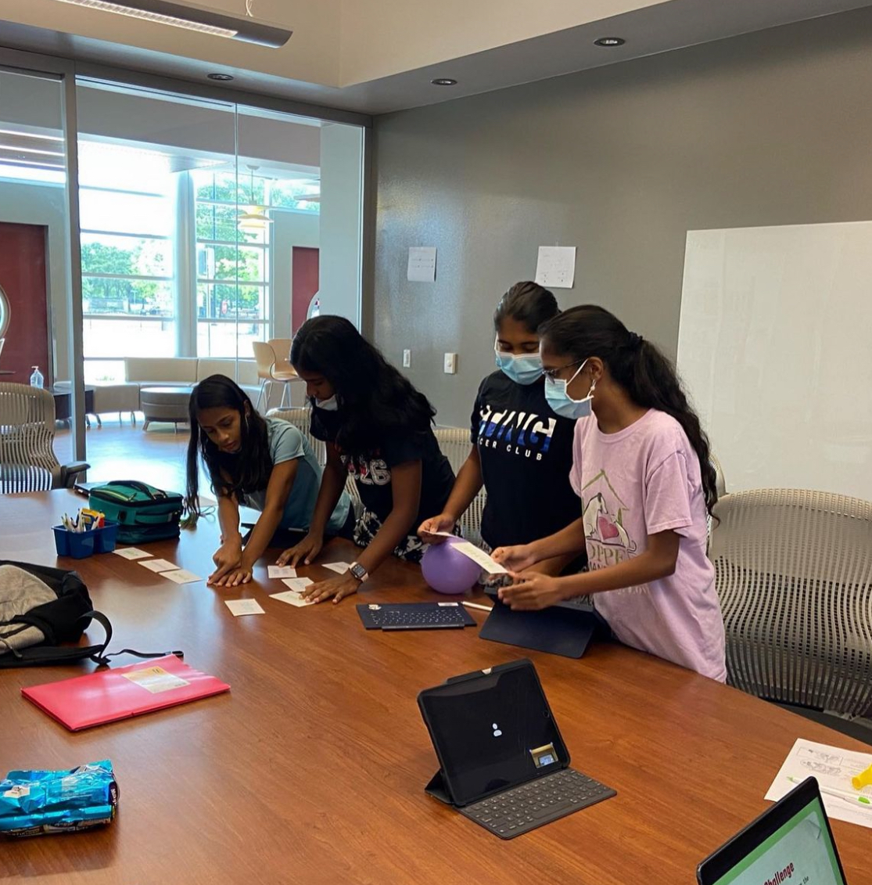
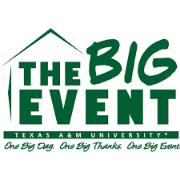

From a young age, I have always been actively involved in my community. Volunteering has been integral to my life whether it be hurricane relief, school events, or through nonprofit organizations. As a member of the Keep Coppell Beautiful team, I was 1 of 14 selected high school students who worked to improve ecological consciousness within the Coppell community. We planned and facilitated events at major Coppell landmarks like city parks, farmers market, and biodiversity center.

Furthermore, I was a member of the Boy Scouts. During my time, I had the unique opportunity of working with various groups like the Coppell Rotary Club. The pinnacle of this journey was my Eagle Scout project. As an environmentalist, I wanted my project to help improve the environment, so I worked with the Coppell High School Eco Club. After speaking with club leadership, I was tasked with designing and implementing pollinator beds for the high school garden. After four months the job was done. Now, I get to see the beautiful flowers grow from these beds every time I drive by my high school.

Finally, all of the skills I gained from these experiences culminated in one big project. HumanWHO-Coppell is a chapter of a nonprofit organization that was founded by myself and three other friends. Our mission was to expand STEM education to areas that were lacking the appropriate resources. We worked with students in grades 6-8, holding weekly seminars and monthly competitions in math, programming, and anatomy. During these seminars, students got to speak with guest speakers who were leading professionals in their field and learn about the designated subject. We were even able to launch a summer camp at our local library.

During my time at Texas A&M, I have continued my service journey by participating in the Big Event. I have expand my impact through my role as a Committee member within this organization. I have even served as an executive for The Big Event 2026.